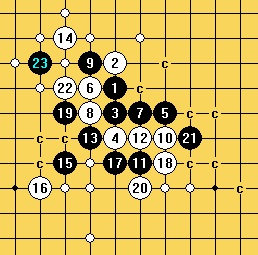
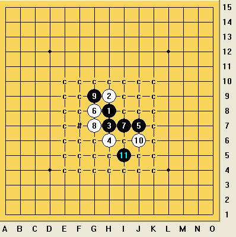

松三知多少
#1 <font color="red">松三知多少</font>作者：砍 发表时间：2011-7-11 20:55:04
松三你知道多少？你是否还在为松三而苦恼？它是平衡局？黑优局？还是传说中的必胜？
大家来提出疑问吧，让我们来一起地毯它？
请发出令你们疑惑的松三局面（除最强20）
［ 逆刃 于 2011-7-11 21:23:27 时花20金币送鲜花一朵］
［ 龙小小 于 2011-8-1 14:46:38 时花250金币拍了你一板砖］
［ 屏蔽 于 2011-10-10 20:22:46 时奖励此帖[金币加 100 威望加1］
［此帖子已被 屏蔽 在 2011-10-10 20:23:03 编辑过］
［ 絕版賭徒 于 2011-11-8 21:03:42 时花250金币拍了你一板砖］
［ 絕版賭徒 于 2011-11-8 21:03:48 时花250金币拍了你一板砖］
［ 絕版賭徒 于 2011-11-8 21:03:53 时花250金币拍了你一板砖］
［ 絕版賭徒 于 2011-11-8 21:03:57 时花250金币拍了你一板砖］
［ 絕版賭徒 于 2011-11-8 21:04:02 时花250金币拍了你一板砖］
［ 絕版賭徒 于 2011-11-8 21:04:07 时花250金币拍了你一板砖］
［ 絕版賭徒 于 2011-11-8 21:04:12 时花50金币砸了你一个臭鸡蛋］
［ 絕版賭徒 于 2011-11-8 21:04:16 时花50金币砸了你一个臭鸡蛋］
［ 絕版賭徒 于 2011-11-8 21:04:20 时花50金币砸了你一个臭鸡蛋］
［ 絕版賭徒 于 2011-11-8 21:04:25 时花50金币砸了你一个臭鸡蛋］
［ 絕版賭徒 于 2011-11-8 21:04:30 时花50金币砸了你一个臭鸡蛋］
［ 絕版賭徒 于 2011-11-8 21:04:33 时花50金币砸了你一个臭鸡蛋］
［ 絕版賭徒 于 2011-11-8 21:04:38 时花50金币砸了你一个臭鸡蛋］
［ 絕版賭徒 于 2011-11-8 21:04:42 时花50金币砸了你一个臭鸡蛋］
［ 絕版賭徒 于 2011-11-8 21:04:46 时花50金币砸了你一个臭鸡蛋］
［ 絕版賭徒 于 2011-11-8 21:04:50 时花50金币砸了你一个臭鸡蛋］
［ 絕版賭徒 于 2011-11-8 21:04:55 时花50金币砸了你一个臭鸡蛋］
［ 絕版賭徒 于 2011-11-8 21:05:00 时花50金币砸了你一个臭鸡蛋］
［ 絕版賭徒 于 2011-11-8 21:05:28 时花50金币砸了你一个臭鸡蛋］
［ 絕版賭徒 于 2011-11-8 21:05:33 时花50金币砸了你一个臭鸡蛋］
［ 絕版賭徒 于 2011-11-8 21:05:37 时花50金币砸了你一个臭鸡蛋］
［ 絕版賭徒 于 2011-11-8 21:05:41 时花50金币砸了你一个臭鸡蛋］
［ 絕版賭徒 于 2011-11-8 21:05:46 时花50金币砸了你一个臭鸡蛋］
#2 Re:松三知多少作者：屏蔽 发表时间：2011-7-11 20:58:38
=======上图对应的爱五子棋谱代码如下，以便你拆解：========
h8h9h7h6j7g8i7g7g9j6i5i6g6f10f5e4h5j5f7i4k6f8
======================================================
=======上图对应的爱五子棋谱代码如下，以便你拆解：========
h8h9h7h6j7g8i7g7g9j6i5i8i6l7i10f10a15f8
======================================================
先从看起来你们可能有谱的开始好了……
#3 Re:松三知多少作者：掌棋如烟 发表时间：2011-7-11 21:24:29
=======上图对应的爱五子棋谱代码如下，以便你拆解：========
h8h9h7h6j7g8i7g7g9j6i5l7
======================================================
#4 Re:松三知多少作者：死劲哭 发表时间：2011-7-11 21:25:17
=======上图对应的爱五子棋谱代码如下，以便你拆解：========
h8h9h7h6j7g8i7g7g9j6i5i6g6f10f5e4h5j5f7i4k6f8e9k4k9k7
======================================================
#5 Re:Re:松三知多少作者：死劲哭 发表时间：2011-7-11 21:27:45
引用：
原文由 掌棋如烟 发表于 2011-7-11 21:24:29 :
=======上图对应的爱五子棋谱代码如下，以便你拆解：========
h8h9h7h6j7g8i7g7g9j6i5l7
======================================================
=======上图对应的爱五子棋谱代码如下，以便你拆解：========
h8h9h7h6j7g8i7g7g9j6i5l7i6i8i10
======================================================
#6 Re:Re:松三知多少作者：刀魂 发表时间：2011-7-11 21:33:38
引用：
原文由 死劲哭 发表于 2011-7-11 21:25:17 :
=======上图对应的爱五子棋谱代码如下，以便你拆解：========
h8h9h7h6j7g8i7g7g9j6i5i6g6f10f5e4h5j5f7i4k6f8e9k4k9k7
======================================================25 错了。。。
#7 Re:松三知多少作者：死劲哭 发表时间：2011-7-11 21:38:29
=======上图对应的爱五子棋谱代码如下，以便你拆解：========
h8h9h7h6j7g8i7g7g9j6i5i8i6l7i10f10h5g4k10
======================================================
#8 Re:松三知多少作者：屏蔽 发表时间：2011-7-11 21:47:39

我把简单扫过的毛巾谱给展示一下……纯粹左边或右边的防守都可以胜，关键在于对左右两边都有干涉的部分。
#9 Re:松三知多少作者：死劲哭 发表时间：2011-7-11 21:48:05
=======上图对应的爱五子棋谱代码如下，以便你拆解：========
h8h9h7h6j7g8i7g7g9j6i5i8i6l7i10f8k4j5k6
======================================================
#10 Re:松三知多少作者：刀魂 发表时间：2011-7-11 21:51:59
学习，学习。
松三，很多变化，很经典。。。
［此帖子已被 刀魂 在 2011-7-11 22:02:16 编辑过］
#11 Re:松三知多少作者：隐藏菜系 发表时间：2011-7-11 22:03:15
大师 你这个太难问了 要不还是来个痛快点的吧 别吊人胃口了#12 Re:Re:松三知多少作者：刀魂 发表时间：2011-7-11 22:06:50
引用：
原文由 死劲哭 发表于 2011-7-11 21:48:05 :
=======上图对应的爱五子棋谱代码如下，以便你拆解：========
h8h9h7h6j7g8i7g7g9j6i5i8i6l7i10f8k4j5k6
======================================================17 错误，以下给出正确17
=======上图对应的爱五子棋谱代码如下，以便你拆解：========
h8h9h7h6j7g8i7g7g9j6i5i8i6l7i10f8j11
======================================================
［ 屏蔽 于 2011-7-11 22:21:09 时花20金币送鲜花一朵］
#13 Re:松三知多少作者：隐藏菜系 发表时间：2011-7-11 22:10:07
大师，你在10楼不是发了一张这个图吗？怎么给删啦？
我相信许多人看到这个图之后要向您提问的
［此帖子已被 隐藏菜系 在 2011-7-11 22:11:00 编辑过］
#14 Re:松三知多少作者：刀魂 发表时间：2011-7-11 22:11:27
弱弱的问句，你是在，问我吗？（我没有说我是大师的意思哈，别误会）#15 Re:Re:松三知多少作者：隐藏菜系 发表时间：2011-7-11 22:14:09
引用：是滴~您刚才不是在10楼说“为了让我们更好的理解松三，可以向您提问吗”，还附了一张跟上图一样的图
原文由 刀魂 发表于 2011-7-11 22:11:27 :
弱弱的问句，你是在，问我吗？（我没有说我是大师的意思哈，别误会）
#16 Re:Re:松三知多少作者：刀魂 发表时间：2011-7-11 22:14:50
引用：
原文由 隐藏菜系 发表于 2011-7-11 22:10:07 :大师，你在10楼不是发了一张这个图吗？怎么给删啦？
我相信许多人看到这个图之后要向您提问的
呵呵，好像不是原图，原图的 c 比这个更多的多，呵呵。。。
没有别的意思，最近放假了，可以，来论坛，交流讨论一下。。。
［此帖子已被 刀魂 在 2011-7-11 22:18:29 编辑过］
#17 Re:Re:Re:松三知多少作者：隐藏菜系 发表时间：2011-7-11 22:16:34
引用：恩恩~这个是我临时仿制的，这张图太容易记了
原文由 刀魂 发表于 2011-7-11 22:14:50 :呵呵，好像不是原图，原图的 c 比这个更多的多，呵呵。。。
#18 Re:松三知多少作者：隐藏菜系 发表时间：2011-7-11 22:17:32
您就不要吊人胃口啦，来个痛快点的吧#19 Re:松三知多少作者：刀魂 发表时间：2011-7-11 22:20:01
怎么才叫，痛快呢？请指点#20 Re:Re:松三知多少作者：隐藏菜系 发表时间：2011-7-11 22:21:07
引用：你懂的，大师。
原文由 刀魂 发表于 2011-7-11 22:20:01 :
怎么才叫，痛快呢？请指点
#21 Re:Re:Re:松三知多少作者：屏蔽 发表时间：2011-7-11 22:21:33
引用：
原文由 刀魂 发表于 2011-7-11 22:06:50 :17 错误，以下给出正确17
［ 屏蔽 于 2011-7-11 22:21:09 时花20金币送鲜花一朵］
感谢，已完成。
#22 Re:松三知多少作者：刀魂 发表时间：2011-7-11 22:24:13
呵呵，客气，一起交流学习。。。#23 Re:松三知多少作者：死劲哭 发表时间：2011-7-11 22:29:52
谢谢正确 17的提示
#24 Re:松三知多少作者：刀魂 发表时间：2011-7-11 22:38:32
呵呵。。。不客气。。。#25 Re:Re:松三知多少作者：刀魂 发表时间：2011-7-11 22:45:39
引用：
原文由 屏蔽 发表于 2011-7-11 20:58:38 :
=======上图对应的爱五子棋谱代码如下，以便你拆解：========
h8h9h7h6j7g8i7g7g9j6i5i6g6f10f5e4h5j5f7i4k6f8
======================================================
=======上图对应的爱五子棋谱代码如下，以便你拆解：========
h8h9h7h6j7g8i7g7g9j6i5i8i6l7i10f10a15f8
======================================================先从看起来你们可能有谱的开始好了……
正确的23：
=======上图对应的爱五子棋谱代码如下，以便你拆解：========
h8h9h7h6j7g8i7g7g9j6i5i6g6f10f5e4h5j5f7i4k6f8e9
======================================================后面，较为复杂，有很多 妙手，而且杀点很多，不唯一
#26 Re:松三知多少作者：死劲哭 发表时间：2011-7-11 22:54:52
=======上图对应的爱五子棋谱代码如下，以便你拆解：========
h8h9h7h6j7g8i7g7g9j6i5i6g6f10f5e4h5j5f7i4k6f8e9k4
======================================================
求正确的25
#27 Re:Re:松三知多少作者：刀魂 发表时间：2011-7-11 23:09:43
引用：
原文由 死劲哭 发表于 2011-7-11 22:54:52 :
=======上图对应的爱五子棋谱代码如下，以便你拆解：========
h8h9h7h6j7g8i7g7g9j6i5i6g6f10f5e4h5j5f7i4k6f8e9k4
======================================================求正确的25
呵呵，一下为正确的25：
=======上图对应的爱五子棋谱代码如下，以便你拆解：========
h8h9h7h6j7g8i7g7g9j6i5i6g6f10f5e4h5j5f7i4k6f8e9k4e8
======================================================
［ 掌棋宣传员 于 2011-7-11 23:11:35 时花50金币砸了你一个臭鸡蛋］
［ 掌棋宣传员 于 2011-7-11 23:11:37 时花50金币砸了你一个臭鸡蛋］
#28 Re:松三知多少作者：掌棋宣传员 发表时间：2011-7-11 23:12:03
 终于让我等到机会了
终于让我等到机会了#29 Re:松三知多少作者：死劲哭 发表时间：2011-7-11 23:13:38
这样能杀掉？
=======上图对应的爱五子棋谱代码如下，以便你拆解：========
h8h9h7h6j7g8i7g7g9j6i5i6g6f10f5e4h5j5f7i4k6f8e9k4e8d9e5g5e6e7d7c8
======================================================
#30 Re:Re:松三知多少作者：刀魂 发表时间：2011-7-11 23:15:06
引用：
原文由 掌棋宣传员 发表于 2011-7-11 23:12:03 :
，这。。。。这从何说起，这个25的确是对的。。。
#31 Re:松三知多少作者：逆刃 发表时间：2011-7-11 23:34:54
讨论讨论另外一个6吧~那个6更猥琐一些。#32 Re:松三知多少作者：死劲哭 发表时间：2011-7-11 23:40:12
发帖子的人呢？？？ 有始无终！#33 Re:Re:松三知多少作者：小红眼镜 发表时间：2011-7-11 23:54:22
引用：
原文由 死劲哭 发表于 2011-7-11 23:13:38 :这样能杀掉？
=======上图对应的爱五子棋谱代码如下，以便你拆解：========
h8h9h7h6j7g8i7g7g9j6i5i6g6f10f5e4h5j5f7i4k6f8e9k4e8d9e5g5e6e7d7c8
======================================================
=======上图对应的爱五子棋谱代码如下，以便你拆解：========
h8h9h7h6j7g8i7g7g9j6i5i6g6f10f5e4h5j5f7i4k6f8e9k4e8d9h4
======================================================
白棋防守在左边。。。就跑到右边K9的位置开始搞搞。。。如果28防守在右边。。那么左边直接杀了。。。
［此帖子已被 小红眼镜 在 2011-7-11 23:59:53 编辑过］
［ 屏蔽 于 2011-7-12 21:13:45 时花20金币送鲜花一朵］
#34 Re:松三知多少作者：刀魂 发表时间：2011-7-11 23:57:57
=======上图对应的爱五子棋谱代码如下，以便你拆解：========
h8h9h7h6j7g8i7g7g9j6i5
======================================================
这个6，基本干净了，其他的一些余点，只是交换而已罢了。
=======上图对应的爱五子棋谱代码如下，以便你拆解：========
h8h9h7h6j7g8
======================================================
这个 6 ，还有很多点，可以讨论。。。
#35 Re:Re:Re:松三知多少作者：非黑既白 发表时间：2011-7-12 0:10:06
引用：
原文由 小红眼镜 发表于 2011-7-11 23:54:22 :
=======上图对应的爱五子棋谱代码如下，以便你拆解：========
h8h9h7h6j7g8i7g7g9j6i5i6g6f10f5e4h5j5f7i4k6f8e9k4e8d9h4
======================================================白棋防守在左边。。。就跑到右边K9的位置开始搞搞。。。如果28防守在右边。。那么左边直接杀了。。。
［此帖子已被 小红眼镜 在 2011-7-11 23:59:53 编辑过］
求指点
=======上图对应的爱五子棋谱代码如下，以便你拆解：========
h8h9h7h6j7g8i7g7g9j6i5i6g6f10f5e4h5j5f7i4k6f8e9k4e8d9h4l3m2j4e7j3j2e10
======================================================
#36 Re:松三知多少作者：非黑既白 发表时间：2011-7-12 0:17:52
 刚看错了，懂了
刚看错了，懂了
#37 Re:松三知多少作者：刀魂 发表时间：2011-7-12 0:18:55
=======上图对应的爱五子棋谱代码如下，以便你拆解：========
h8h9h7h6j7g8i7g7g9j6i5i6g6f10f5e4h5j5f7i4k6f8e9k4e8d9h4l3m2j4e5
======================================================31 错误
一下给出正确的31：
#38 Re:松三知多少作者：极地剑客 发表时间：2011-7-12 4:36:50
砍大师不都地毯了吗，还来吊胃口啊#39 Re:松三知多少作者：砍 发表时间：2011-7-12 10:45:25
擦，我是带领大家一起研究松三，一个人做研究，不如大家一起做研究，即便我地毯松三，大家难道都只是等大饼么？
大家一起研究才是好的
#40 Re:松三知多少作者：非黑既白 发表时间：2011-7-12 10:59:43
求教这个 20 的杀法
=======上图对应的爱五子棋谱代码如下，以便你拆解：========
h8h9h7h6j7g8i7g7g9j6i5f7e6i6g6f10f5e4f8d8
======================================================
#41 Re:松三知多少作者：砍 发表时间：2011-7-12 11:01:22
既然你们诚心诚意的发问了，那我就大发慈悲告诉你，为防止大家不动脑子，为了守护经典的松三，一直坚信松三将会被地毯的真理，我是穿梭在地毯与不地毯之间的魔鬼地毯猪鼻子人
=======上图对应的爱五子棋谱代码如下，以便你拆解：========
h8h9h7h6j7g8i7g7g9j6i5i6g6f10f5e4h5j5f7i4k6f8e9
======================================================
这个23确实可以地毯
=======上图对应的爱五子棋谱代码如下，以便你拆解：========
h8h9h7h6j7g8i7g7g9j6i5i8i6l7i10f10j10
======================================================
这个17可以地毯
=======上图对应的爱五子棋谱代码如下，以便你拆解：========
h8h9h7h6j7g8i7g7g9j6i5l7i6i8i10
======================================================
这样可以地毯这个12
=======上图对应的爱五子棋谱代码如下，以便你拆解：========
h8h9h7h6j7g8i7g7g9j6i5i6g6f10f5e4h5j5f7i4k6f8e9k4e8d9h4
======================================================
这样可以地毯这个24
=======上图对应的爱五子棋谱代码如下，以便你拆解：========
h8h9h7h6j7g7g9g8i7j6i5i8i6l7i10f8j11
======================================================
这个17可以必胜
=======上图对应的爱五子棋谱代码如下，以便你拆解：========
h8h9h7h6j7g8i7g7g9j6i5f7e6i6g6f10f5e4f8d8d7
======================================================
这个21可以必胜
［ 逆刃 于 2011-7-12 11:05:43 时奖励此帖[金币加 100 威望加1］
［ 隐藏菜系 于 2011-7-12 14:25:57 时花20金币送鲜花一朵］
#42 Re:Re:松三知多少作者：刀魂 发表时间：2011-7-12 11:04:57
引用：
原文由 非黑既白 发表于 2011-7-12 10:59:43 :求教这个 20 的杀法
=======上图对应的爱五子棋谱代码如下，以便你拆解：========
h8h9h7h6j7g8i7g7g9j6i5f7e6i6g6f10f5e4f8d8
======================================================
=======上图对应的爱五子棋谱代码如下，以便你拆解：========
h8h9h7h6j7g8i7g7g9j6i5f7e6i6g6f10f5e4f8d8i10
======================================================
#43 Re:Re:Re:松三知多少作者：非黑既白 发表时间：2011-7-12 11:15:09
引用：
原文由 刀魂 发表于 2011-7-12 11:04:57 :
=======上图对应的爱五子棋谱代码如下，以便你拆解：========
h8h9h7h6j7g8i7g7g9j6i5f7e6i6g6f10f5e4f8d8i10
======================================================
=======上图对应的爱五子棋谱代码如下，以便你拆解：========
h8h9h7h6j7g8i7g7g9j6i5f7e6i6g6f10f5e4f8d8i10j9i11h10i9i8
======================================================
#44 Re:Re:松三知多少作者：非黑既白 发表时间：2011-7-12 11:23:26
引用：
原文由 砍 发表于 2011-7-12 11:01:22 :既然你们诚心诚意的发问了，那我就大发慈悲告诉你，为防止大家不动脑子，为了守护经典的松三，一直坚信松三将会被地毯的真理，我是穿梭在地毯与不地毯之间的魔鬼地毯猪鼻子人
=======上图对应的爱五子棋谱代码如下，以便你拆解：========
h8h9h7h6j7g8i7g7g9j6i5f7e6i6g6f10f5e4f8d8d7
======================================================这个21可以必胜
=======上图对应的爱五子棋谱代码如下，以便你拆解：========
h8h9h7h6j7g8i7g7g9j6i5f7e6i6g6f10f5e4f8d8d7g4i10j9k6l7
======================================================
#45 Re:松三知多少作者：砍 发表时间：2011-7-12 11:29:34
=======上图对应的爱五子棋谱代码如下，以便你拆解：========
h8h9h7h6j7g8i7g7g9j6i5f7e6i6g6f10f5e4f8d8d7g4h5
======================================================
23地毯
#46 Re:Re:松三知多少作者：非黑既白 发表时间：2011-7-12 11:32:10
引用：非常感谢！只是已经没金币送你花了。等有的时候一定补上
原文由 砍 发表于 2011-7-12 11:29:34 :
=======上图对应的爱五子棋谱代码如下，以便你拆解：========
h8h9h7h6j7g8i7g7g9j6i5f7e6i6g6f10f5e4f8d8d7g4h5
======================================================23地毯
#47 Re:松三知多少作者：砍 发表时间：2011-7-12 11:50:37
花花只是浮云 地毯才是王道
地毯才是王道#48 Re:松三知多少作者：侯军学棋 发表时间：2011-7-12 13:26:26
=======上图对应的爱五子棋谱代码如下，以便你拆解：========
h8h9h7h6j7g8i7g7g9j6i5f7e6i6g6f10f5e4f8g4
======================================================这个20怎么杀
#49 Re:松三知多少作者：砍 发表时间：2011-7-12 14:09:44
楼上的问题问的好啊这个20也很厉害
=======上图对应的爱五子棋谱代码如下，以便你拆解：========
h8h9h7h6j7g8i7g7g9j6i5f7e6i6g6f10f5e4f8g4j9i8i10
======================================================
这样就可以了
#50 Re:松三知多少作者：屏蔽 发表时间：2011-7-12 21:23:36
=======上图对应的爱五子棋谱代码如下，以便你拆解：========
h8h9h7h6j7g8i7g7g9j6i5i8i6i10
======================================================
忽然想起来这个分支还不太清楚……挡哪边？后边什么思路？
#51 Re:松三知多少作者：岑小鱼 发表时间：2011-7-12 22:14:49
shangmian .....silushi xiangdangyu bai xian chong4
［ 屏蔽 于 2011-7-14 22:53:42 时花20金币送鲜花一朵］
#52 Re:松三知多少作者：死劲哭 发表时间：2011-7-13 8:01:35
松三未可知#53 Re:松三知多少作者：刀魂 发表时间：2011-7-13 8:55:39
呵呵，还是，可以下的，不过，白很被动，如果下松三的话。。。#54 Re:松三知多少作者：砍 发表时间：2011-7-13 9:36:25
=======上图对应的爱五子棋谱代码如下，以便你拆解：========
h8h9h7h6j7g8i7g7g9j6i5i8i6i10j11
======================================================
#55 Re:松三知多少作者：死劲哭 发表时间：2011-7-13 10:17:22
=======上图对应的爱五子棋谱代码如下，以便你拆解：========
h8h9h7h6j7g8i7g7g9j6i5i8i6i10j11k8j5i4
======================================================
#56 Re:松三知多少作者：砍 发表时间：2011-7-13 10:31:59
楼上的17下在18#57 Re:Re:松三知多少作者：死劲哭 发表时间：2011-7-13 11:21:36
引用：还是不会下
原文由 砍 发表于 2011-7-13 10:31:59 :
楼上的17下在18
#58 Re:松三知多少作者：茗弈宽容 发表时间：2011-7-13 11:27:04
=======上图对应的爱五子棋谱代码如下，以便你拆解：========
h8h9h7h6j7g8i7g7g9j6i5i8i6i10j11k8i4i3j5l7j9
======================================================
#59 Re:松三知多少作者：死劲哭 发表时间：2011-7-13 11:35:10
谢谢‘宽容老师’ 这个网站有你的存在，是我常来这里的原因之一#60 Re:松三知多少作者：砍 发表时间：2011-7-14 22:39:59
=======上图对应的爱五子棋谱代码如下，以便你拆解：========
h8h9h7h6j7g7g9j6i5i6g6i7j8i8i10j10
======================================================
求杀
#61 Re:松三知多少作者：江南新绿 发表时间：2011-7-14 23:12:09
好难下的局面啊
［此帖子已被 江南新绿 在 2011-7-14 23:17:53 编辑过］
#62 Re:松三知多少作者：砍 发表时间：2011-7-15 11:19:16
 我提的问题是不是太难了啊，没人解答
我提的问题是不是太难了啊，没人解答#63 Re:松三知多少作者：砍 发表时间：2011-7-19 21:47:36
额，我的提问为什么总要我自己来解答啊
#64 Re:松三知多少作者：非黑既白 发表时间：2011-7-19 22:10:00
=======上图对应的爱五子棋谱代码如下，以便你拆解：========
h8h9h7h6j7g7g9i7j8i6i5j6g6i8i10j10f8
======================================================
［ 逆刃 于 2011-7-24 19:13:47 时花20金币送鲜花一朵］
#65 Re:松三知多少作者：左伟光 发表时间：2011-7-21 23:01:29
无聊，等饼。
不看饼，只下载。
#66 Re:松三知多少作者：非黑既白 发表时间：2011-7-22 9:37:55
楼主出来呀，对我64楼的思路给个鉴定呀#67 Re:松三知多少作者：砍 发表时间：2011-7-23 18:58:23
楼上不好意思啊，这几天看另一个松月局面呢，你的这个我刚看，地毯了，完全可以，谢谢#68 Re:松三知多少作者：非黑既白 发表时间：2011-7-23 19:30:32
只是简单的谢谢呀，给个威望或鲜花嘛#69 Re:松三知多少作者：砍 发表时间：2011-7-24 18:36:47
是哦 楼上的#70 Re:Re:松三知多少作者：非黑既白 发表时间：2011-7-24 21:00:07
引用：你真没劲
原文由 砍 发表于 2011-7-24 18:36:47 :
是哦 楼上的

#71 Re:松三知多少作者：砍 发表时间：2011-7-25 10:05:10
是哦，楼上的#72 Re:松三知多少作者：非黑既白 发表时间：2011-7-25 10:44:39
是哦，楼上的
你真不是东西 
#73 Re:松三知多少作者：砍 发表时间：2011-7-25 11:16:29
是哦，楼上的
［ 小红眼镜 于 2011-7-25 11:38:20 时花20金币送鲜花一朵］
#74 Re:松三知多少作者：小帮帮 发表时间：2011-7-31 22:15:23
怎么没人关注了？
#75 Re:松三知多少作者：死劲哭 发表时间：2011-8-1 15:52:08
楼主是无赖
谁还愿意关注
#76 Re:松三知多少作者：砍 发表时间：2011-8-1 16:02:35
是么？主要我没感觉有人对松三热情高涨啊
#77 Re:松三知多少作者：死劲哭 发表时间：2011-8-1 16:14:54
不！关键是你名声和行为太低劣，没人愿意和你这样的人探讨什么了#78 Re:松三知多少作者：砍 发表时间：2011-8-1 16:18:37
那太好了#79 Re:松三知多少作者：月光公主 发表时间：2011-8-1 18:14:29
 小砍你直接把饼分给大家嘛
小砍你直接把饼分给大家嘛#80 Re:松三知多少作者：屏蔽 发表时间：2011-8-1 20:18:37
=======上图对应的爱五子棋谱代码如下，以便你拆解：========
h8h9h7h6j7g8i7g7g9j6i5i8i6l7i10l9
======================================================
肿么杀？
#81 Re:松三知多少作者：砍 发表时间：2011-8-1 21:03:32
17下在8左边［ 屏蔽 于 2011-8-1 23:00:24 时花20金币送鲜花一朵］
#82 Re:松三知多少作者：屏蔽 发表时间：2011-8-1 23:03:47
感谢，已解决……为什么会有这种选点……#83 Re:松三知多少作者：砍 发表时间：2011-8-2 16:43:01
=======上图对应的爱五子棋谱代码如下，以便你拆解：========
h8h9h7h6j7g7g9j6i5i6g6i7j8i8i10h10
======================================================
怎么杀
#84 Re:Re:松三知多少作者：岑小鱼 发表时间：2011-8-2 21:09:59
引用：
原文由 屏蔽 发表于 2011-8-1 23:03:47 :
感谢，已解决……为什么会有这种选点……从棋型上看是上下联系...
类似的变化有
=======上图对应的爱五子棋谱代码如下，以便你拆解：========
h8h9h7h6j7g8i7g7g9j6i5l7i6i8i10h10h11g12i12j11f7
======================================================
#85 Re:松三知多少作者：岑小鱼 发表时间：2011-8-2 21:13:37
83L的变化F11，L7控制似乎不错，，怎么杀就不晓得了。#86 Re:松三知多少作者：屏蔽 发表时间：2011-8-2 21:34:39
=======上图对应的爱五子棋谱代码如下，以便你拆解：========
h8h9h7h6j7g8i7g7g9j6i5i8i6l7i10h10h11f10g12j9i12g10f11h13
======================================================
这个16怎么杀？
#87 Re:松三知多少作者：岑小鱼 发表时间：2011-8-2 21:42:54
我的方式是21-G11［ 屏蔽 于 2011-8-2 22:27:55 时花20金币送鲜花一朵］
［ 死劲哭 于 2011-8-2 22:41:17 时花20金币送鲜花一朵］
#88 Re:松三知多少作者：屏蔽 发表时间：2011-8-2 22:28:36
还真是挺简单的……#89 Re:松三知多少作者：屏蔽 发表时间：2011-8-2 22:53:01
=======上图对应的爱五子棋谱代码如下，以便你拆解：========
h8h9h7h6j7g8i7g7g9j6i5i8i6l7i10f10
======================================================
这个16怎么杀？
［此帖子已被 屏蔽 在 2011-8-2 22:55:24 编辑过］
#90 Re:松三知多少作者：岑小鱼 发表时间：2011-8-2 23:03:33
这个似乎有人发过谱....J10是关键点..
［ 屏蔽 于 2011-8-24 0:10:38 时花20金币送鲜花一朵］
#91 Re:松三知多少作者：屏蔽 发表时间：2011-8-3 10:27:51
=======上图对应的爱五子棋谱代码如下，以便你拆解：========
h8h9h7h6j7g8i7g7g9j6i5i10f7i6g6j11k12f5
======================================================
这个呢？13是这边么？
［此帖子已被 屏蔽 在 2011-8-3 10:30:18 编辑过］
#92 Re:Re:松三知多少作者：岑小鱼 发表时间：2011-8-3 12:47:49
=======上图对应的爱五子棋谱代码如下，以便你拆解：========
h8h9h7h6j7g8i7g7g9j6i5i10f7i6g6j11k12f5k10k9j9i8l11
======================================================
［ 屏蔽 于 2011-8-24 0:11:12 时花20金币送鲜花一朵］
#93 Re:松三知多少作者：砍 发表时间：2011-8-3 20:25:07
=======上图对应的爱五子棋谱代码如下，以便你拆解：========
h8h9h7h6j7g7g9j6i5i6g6i7j8i8i10h10h11g12o1g11n1g10m1
======================================================
这个3个18怎么杀啊
#94 Re:Re:松三知多少作者：岑小鱼 发表时间：2011-8-3 20:46:06
这个31这个关键点也跟上面的类似
=======上图对应的爱五子棋谱代码如下，以便你拆解：========
h8h9h7h6j7g8i7g7g9j6i5l7i6i8i10h10h11g11g12j9f12f10e12h12e9e11d11f13d9d12f7
======================================================
完全看错楼上的图了。不好意思。。。。。
［此帖子已被 岑小鱼 在 2011-8-3 20:47:15 编辑过］
#95 Re:松三知多少作者：堂堂 发表时间：2011-8-23 11:57:12
=======上图对应的爱五子棋谱代码如下，以便你拆解：========
h8h9h7h6j7g8i7g7g9j6i5i6g6f10f5e4h5j5f7i4k6f8e9e8
======================================================
这个怎么杀
#96 Re:松三知多少作者：屏蔽 发表时间：2011-8-23 12:56:44
哦我终于想起来是这个帖子了。
=======上图对应的爱五子棋谱代码如下，以便你拆解：========
h8h9h7h6j7g8i7g7g9j6i5i10f7i6g6j11k12f5k10k11a1i11
======================================================
还有这两个20呢？
#97 Re:松三知多少作者：岑小鱼 发表时间：2011-8-23 14:44:55
=======上图对应的爱五子棋谱代码如下，以便你拆解：========
h8h9h7h6j7g8i7g7g9j6i5i10f7i6g6j11k12f5k10i11k6k7e8d9l5m4j5h5l7m8l6l8m6m5n7
======================================================
=======上图对应的爱五子棋谱代码如下，以便你拆解：========
h8h9h7h6j7g8i7g7g9j6i5i10f7i6g6j11k12f5k10k11e8d9k5l5l6m7e7
======================================================
［ 屏蔽 于 2011-8-24 0:11:32 时花20金币送鲜花一朵］
#98 Re:Re:Re:松三知多少作者：屏蔽 发表时间：2011-8-23 19:41:21
引用：
原文由 岑小鱼 发表于 2011-8-3 12:47:49 :
=======上图对应的爱五子棋谱代码如下，以便你拆解：========
h8h9h7h6j7g8i7g7g9j6i5i10f7i6g6j11k12f5k10k9j9i8l11j13
======================================================
这样呢？
#99 Re:松三知多少作者：屏蔽 发表时间：2011-8-23 19:45:08
=======上图对应的爱五子棋谱代码如下，以便你拆解：========
h8h9h7h6j7g8i7g7g9j6i5i8i6l7i10f10j10l9a1h10
======================================================
两个18，黑棋如何进攻？
#100 Re:松三知多少作者：净释 发表时间：2011-8-23 20:07:57
=======上图对应的爱五子棋谱代码如下，以便你拆解：========
h8h9h7h6j7g8i7g7g9j6i5i8i6l7i10f10j10l9i11
======================================================
［ 屏蔽 于 2011-8-24 0:11:49 时花20金币送鲜花一朵］
#101 Re:松三知多少作者：净释 发表时间：2011-8-23 20:09:21
=======上图对应的爱五子棋谱代码如下，以便你拆解：========
h8h9h7h6j7g8i7g7g9j6i5i8i6l7i10f10j10h10f7
======================================================
［ 屏蔽 于 2011-8-24 0:12:05 时花20金币送鲜花一朵］
#102 Re:松三知多少作者：岑小鱼 发表时间：2011-8-23 21:02:14
=======上图对应的爱五子棋谱代码如下，以便你拆解：========
h8h9h7h6j7g8i7g7g9j6i5i10f7i6g6j11k12f5k10k9j9i8l11j13l12j12j14k13l13l14i11
======================================================
强行定型..左右各自有独立的杀..
［ 屏蔽 于 2011-8-24 0:12:15 时花20金币送鲜花一朵］
#103 Re:松三知多少作者：屏蔽 发表时间：2011-8-23 23:19:44
=======上图对应的爱五子棋谱代码如下，以便你拆解：========
h8h9h7h6j7g8i7g7g9j6i5i10f7h5
======================================================
这个14，黑棋该怎么下？
#104 Re:松三知多少作者：净释 发表时间：2011-8-23 23:24:35
=======上图对应的爱五子棋谱代码如下，以便你拆解：========
h8h9h7h6j7g8i7g7g9j6i5i10f7h5g6
======================================================
这样大概可以吧
［ 屏蔽 于 2011-8-24 0:12:32 时花20金币送鲜花一朵］
［此帖子已被 净释 在 2011-8-24 0:17:45 编辑过］
#105 Re:Re:松三知多少作者：屏蔽 发表时间：2011-8-23 23:45:33
引用：
原文由 净释 发表于 2011-8-23 20:07:57 :
=======上图对应的爱五子棋谱代码如下，以便你拆解：========
h8h9h7h6j7g8i7g7g9j6i5i8i6l7i10f10j10l9i11
======================================================
=======上图对应的爱五子棋谱代码如下，以便你拆解：========
h8h9h7h6j7g8i7g7g9j6i5i8i6l7i10f10j10l9i11h10f7i4a1i3
======================================================
20之后黑棋怎么胜？这样走之后下面能处理干净么？
#106 Re:松三知多少作者：净释 发表时间：2011-8-23 23:53:48
=======上图对应的爱五子棋谱代码如下，以便你拆解：========
h8h9h7h6j7g8i7g7g9j6i5i8i6l7i10f10j10
======================================================
这样呢
［ 屏蔽 于 2011-8-24 0:12:51 时花20金币送鲜花一朵］
［此帖子已被 净释 在 2011-8-24 0:16:11 编辑过］
#107 Re:松三知多少作者：净释 发表时间：2011-8-24 0:03:15
据传闻，楼主有套谱嫌疑。我终于上当了#108 Re:松三知多少作者：净释 发表时间：2011-8-24 0:09:57
看在我疑似上当的份上，且回答了你的问题，你会奖励一个威望吗？#109 Re:Re:松三知多少作者：屏蔽 发表时间：2011-8-24 0:13:39
引用：
原文由 净释 发表于 2011-8-24 0:09:57 :
看在我疑似上当的份上，且回答了你的问题，你会奖励一个威望吗？
答……不会……
#110 Re:松三知多少作者：屏蔽 发表时间：2011-8-24 0:15:22
阶段性成果
我注意到有些较强的分支没在精简谱里被包括进去

本来没想发这么多的，结果发现有的同型处理起来不方便，干脆把没怎么做的两个点也发了……
#111 Re:松三知多少作者：逆刃 发表时间：2011-8-24 0:15:41
都是老掉牙的变化了，这个6应该早就地毯了吧。。。
#112 Re:松三知多少作者：砍 发表时间：2011-8-24 10:56:56
老哥V5
嘎嘎嘎嘎嘎嘎嘎
#113 Re:Re:Re:松三知多少作者：岑小鱼 发表时间：2011-8-24 12:54:08
引用：
原文由 屏蔽 发表于 2011-8-23 23:45:33 :20之后黑棋怎么胜？这样走之后下面能处理干净么？
to:105L
=======上图对应的爱五子棋谱代码如下，以便你拆解：========
h8h9h7h6j7g8i7g7g9j6i5l7i6i8i10f10j10l9i11h10h5g4h12k9i9g10i4i3f7
======================================================
#114 Re:松三知多少作者：岑小鱼 发表时间：2011-8-24 12:59:29
=======上图对应的爱五子棋谱代码如下，以便你拆解：========
h8h9h7h6j7g8i7g7g9j6i5l7i6i8i10g10
======================================================
看了下110L.漏了强变....
#115 Re:松三知多少作者：風雨哃舟 发表时间：2011-8-25 0:53:14
=======上图对应的爱五子棋谱代码如下，以便你拆解：========
h8h9h7h6j7g8i7g7g9j6i5l7i6i8i10g10i11
======================================================
#116 Re:松三知多少作者：風雨哃舟 发表时间：2011-8-25 0:56:14
=======上图对应的爱五子棋谱代码如下，以便你拆解：========
h8h9h7h6j7g8i7g7g9j6i5l7i6i8i10g10f11
======================================================
#117 Re:松三知多少作者：dyccj 发表时间：2011-8-26 13:57:31
头大
#118 Re:松三知多少作者：潇洒 发表时间：2011-9-4 11:18:49
=======上图对应的爱五子棋谱代码如下，以便你拆解：========
h8h9h7h6j7g7g9j6
======================================================
这个8做完没有？
#119 Re:松三知多少作者：砍 发表时间：2011-9-7 10:50:42
没有
#120 Re:松三知多少作者：砍 发表时间：2011-9-7 10:52:51
=======上图对应的爱五子棋谱代码如下，以便你拆解：========
h8h9h7h6j7g7g9j6i5i7j8i6g6i8i10
======================================================
能杀这个14你就厉害了
#121 Re:松三知多少作者：砍 发表时间：2011-9-10 13:42:53
松三地毯一直传的沸沸扬扬，理论上黑棋必胜
就地毯而言黑棋必胜还差一个14其他都完全地毯
=======上图对应的爱五子棋谱代码如下，以便你拆解：========
h8h9h7h6j7g7g9j6i5i7j8i6g6i8i10f8e9
======================================================
这个16应该是这个变化里最猥琐的了，有愿意一起做猥琐16的可以联系一下
1415820565
［ 失落刀 于 2011-9-10 21:40:18 时花20金币送鲜花一朵］
#122 Re:松三知多少作者：随心而欲 发表时间：2011-9-10 14:42:31
=======上图对应的爱五子棋谱代码如下，以便你拆解：========
h8h9h7h6j7g7g9j6i5i7j8i6g6i8i10f8f10
======================================================
这样还有强防？
［此帖子已被 随心而欲 在 2011-9-10 14:44:31 编辑过］
［此帖子已被 随心而欲 在 2011-9-10 14:45:09 编辑过］
#123 Re:松三知多少作者：砍 发表时间：2011-9-14 7:56:02
有强防守17右边，很多强防守，你这个17我感觉地毯压力很大啊#124 Re:松三知多少作者：砍 发表时间：2011-9-16 14:31:17
经过缜密的分析
=======上图对应的爱五子棋谱代码如下，以便你拆解：========
h8h9h7h6j7g7g9j6i5i7j8i6g6i8i10f8e9
======================================================
这个17是可以杀的
#125 Re:松三知多少作者：堂堂 发表时间：2011-9-16 15:34:52
=======上图对应的爱五子棋谱代码如下，以便你拆解：========
h8h9h7h6j7g7g9j6i5i6g6i8
======================================================
这个解决了？
#126 Re:松三知多少作者：砍 发表时间：2011-9-16 15:37:07
楼上的10早就死了
13下6左上
#127 Re:松三知多少作者：dnlmgh 发表时间：2011-9-18 7:45:53
==============================
此帖内容被屏蔽!
==============================
此帖被屏蔽 屏蔽于 2011-9-18 10:50:55并-20金币
#128 Re:松三知多少作者：砍 发表时间：2011-10-1 15:59:24
经过仔细研究发现其实这个16有简单杀，给大家一个思路，希望做地毯的朋友能省事
=======上图对应的爱五子棋谱代码如下，以便你拆解：========
h8h9h7h6j7g7g9j6i5i7j8i6g6i8i10f8j10
======================================================
这个17就可以杀这个16
#129 Re:松三知多少作者：我爱江俊男 发表时间：2011-10-2 19:28:19
=======上图对应的爱五子棋谱代码如下，以便你拆解：========
h8h9h7h6j7g8i7g7g9j6i5f7e6i6g6f10f5e4f8d7
======================================================
#130 Re:松三知多少作者：我爱江俊男 发表时间：2011-10-2 19:28:58
这个20怎么杀？？#131 Re:松三知多少作者：砍 发表时间：2011-10-2 23:17:07
=======上图对应的爱五子棋谱代码如下，以便你拆解：========
h8h9h7h6j7g8i7g7g9j6i5f7e6i6g6f10f5e4f8d7l7k7k6
======================================================
这样杀
#132 Re:松三知多少作者：砍 发表时间：2011-10-3 21:15:45
提问
如何地毯这个16
#133 Re:Re:松三知多少作者：我爱江俊男 发表时间：2011-10-3 21:56:53
#134 Re:松三知多少作者：砍 发表时间：2011-10-3 22:19:21
最强20过些日子我会公布的，现在不透露
#135 Re:松三知多少作者：砍 发表时间：2011-10-5 14:13:24
发个地毯
 11.rar
11.rar［ 逆刃 于 2011-10-5 16:00:48 时花20金币送鲜花一朵］
［ 悠悠紫叶情 于 2011-10-10 22:57:26 时花20金币送鲜花一朵］
#136 Re:松三知多少作者：砍 发表时间：2011-10-6 19:15:42
怎么杀
#137 Re:Re:松三知多少作者：屏蔽 发表时间：2011-10-10 20:21:53
引用：
原文由 砍 发表于 2011-10-5 14:13:24 :发个地毯
［ 逆刃 于 2011-10-5 16:00:48 时花20金币送鲜花一朵］
我看出来了……发bug谱真是给自己丢份的不二法门。
［ 有志青年 于 2011-10-10 20:29:06 时花20金币送鲜花一朵］
#138 Re:松三知多少作者：屏蔽 发表时间：2011-10-10 20:23:57
本主题学术性较强，内容丰富，引起广泛讨论，特补发奖励并设为精华。#139 Re:松三知多少作者：逆刃 发表时间：2011-10-10 21:14:09
因为是通型，软件在保存分支的时候会自动删掉。
通这个10。
这样杀。
［ 失落刀 于 2011-10-10 21:26:30 时花20金币送鲜花一朵］
［ 悠悠紫叶情 于 2011-10-10 22:58:19 时花20金币送鲜花一朵］
#140 Re:松三知多少作者：极地剑客 发表时间：2011-10-10 22:19:19
额~不错啊~#141 Re:松三知多少作者：秋风雾语 发表时间：2011-10-11 1:36:08
不用活三，道长近来对松月下了不少工夫啊
#142 Re:松三知多少作者：砍 发表时间：2011-10-17 9:27:25
怎么杀啊
#143 Re:松三知多少作者：絕版賭徒 发表时间：2011-11-8 21:09:20
偷谱骗子，竟然可以随意扔东西，管理说是个人行为，没办法管，意思是可以乱扔。反正也是你先惹我，那老子陪你玩，，，，就怕你玩不起#144 Re:松三知多少作者：砍 发表时间：2011-11-9 8:10:39
==============================
此帖内容被屏蔽!
==============================
此帖被屏蔽 屏蔽于 2011-11-9 10:01:07并-20金币
#145 Re:松三知多少作者：賢周 发表时间：2011-11-14 14:05:10
#146 Re:松三知多少作者：賢周 发表时间：2011-12-10 6:09:49